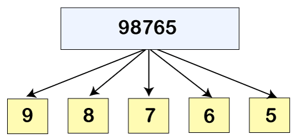

I'm a 20 year old software engineering student who loves computers, video-games, and Puroresu (Japanese Proffesional Wrestling).
Along with my university studies, I'm actively focusing on my self-improvement journey and also training BJJ
(Brazilian Jiu-Jitsu, which is based on ground fighting and submission holds/grappling). Sometimes I play video-games as well
and when I do, I aim to achieve 100% completion on them (as of writing this, I'm placed at rank #149 on PSNProfiles, in the Turkish leaderboard).
My Projects
The aim of this project is to create a alien life form called "compAlien", that's genetic material is coded by
'X', 'Y', 'Z' with a code lenght of 128, and manage/extract information on this generated life form under specific rules
(view the thumbnail for the rules).
The aim of this project is to play a game of darts and locate the position of the thrown darts on the board, under specific rules
(view the thumbnail for the rules).

The aim of this project is to manipulate the digits of a given integer, by the user's input, under specific conditions
(view the thumbnail for the rules).
{kind=link}
{kind=link}
{kind=link}